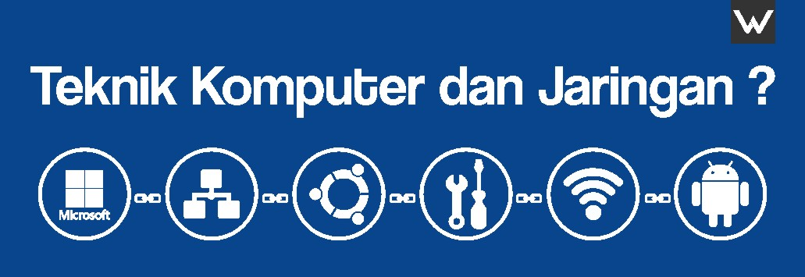

Teknik Jaringan Dan Komputer

TKJ (Teknik Komputer dan Jaringan) adalah ilmu berbasis Teknologi Informasi dan Komunikasi terkait kemampuan algoritma, dan pemrograman komputer, perakitan komputer, perakitan jaringan komputer, dan pengoperasian perangkat lunak, dan internet. Teknik komputer, dan jaringan juga membutuhkan pemahaman di bidang teknik listrik, dan ilmu komputer sehingga mampu mengembangkan, dan mengintegrasikan perangkat lunak, dan perangkat keras.
Saya sendiri memilih jurusan tkj, alasan saya memilih jurusan ini adalah karena cocok dengan hobby saya yaitu suka oprek komputer, tiap hari didepan komputer dan lain sebagainya. Dengan saya memilih jurusan tkj, saya tidak terbebani karena cocok dengan apa yang aku suka
Untuk kalian yang ingin memilih jurusan tkj, pastikan kalian suka dengan jurusan ini. Dengan begitu kalian tidak terbebani saat melakukan apa yang disuruh oleh guru pembimbing kamu. Begitu pula dengan kamu yang ingin memilih jurusan selain tkj, yang pertama harus kalian pikirkan adalah apakah kamu cocok dengan jurusan tersebut?